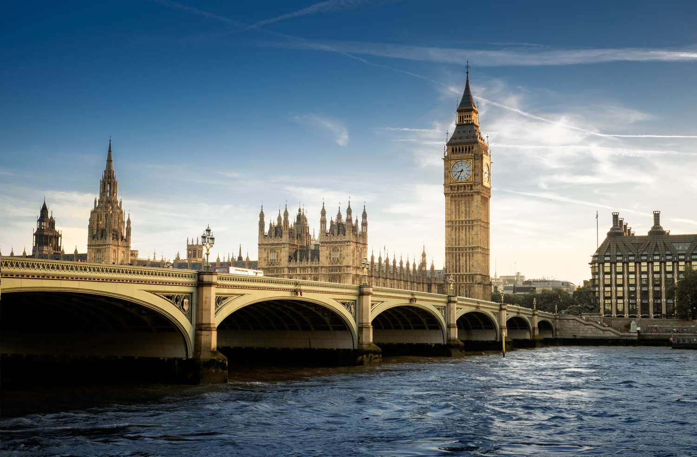

Big Ben, Inglaterra
A torre abriga o maior relógio de quatro lados do mundo e é a décima quarta torre de relógio mais alta do mundo. A torre foi construída em estilo neogótico e tem 96 metros de altura, tendo sido concluída em 1858 e iniciado suas atividades em 7 de setembro de 1859.
A torre do Big Ben é um ícone cultural britânico, um dos símbolos mais proeminentes do Reino Unido.